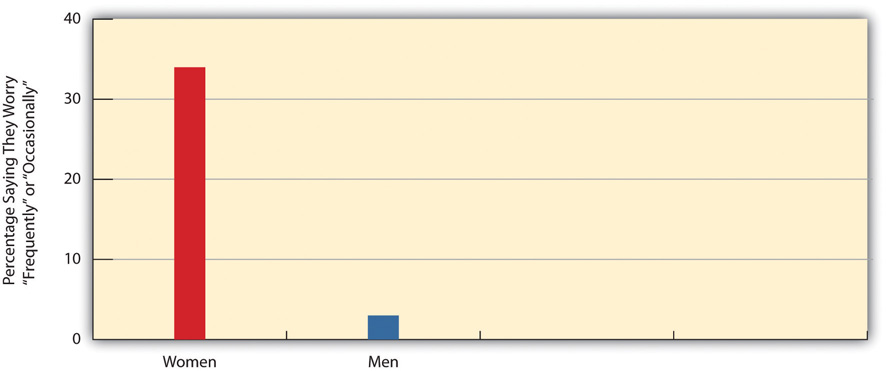
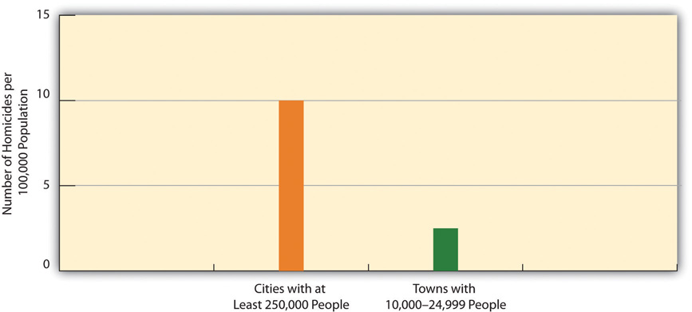

Many types of crime exist. Criminologists commonly group crimes into several major categories: (1) violent crime; (2) property crime; (3) white-collar crime; (4) organized crime; and (5) consensual or victimless crime. Within each category, many more specific crimes exist. For example, violent crime includes homicide, aggravated and simple assault, rape and sexual assault, and robbery, while property crime includes burglary, larceny, motor vehicle theft, and arson. Because a full discussion of the many types of crime would take several chapters or even an entire book or more, we highlight here the most important dimensions of the major categories of crime and the issues they raise for public safety and crime control.
Even if, as our earlier discussion indicated, the news media exaggerate the problem of violent crime, it remains true that violent crime plagues many communities around the country and is the type of crime that most concerns Americans. The news story that began this chapter reminds us that violent crime is all too real for too many people; it traps some people inside their homes and makes others afraid to let their children play outside or even to walk to school. Rape and sexual assault are a common concern for many women and leads them to be more fearful of being victimized than men: In the 2011 Gallup poll mentioned earlier, 37 percent of women said they worried about being sexually assaulted, compared to only 6 percent of men (see Figure 8.1 "Gender and Worry about Being Sexually Assaulted (Percentage Saying They Worry “Frequently” or “Occasionally”)").
Figure 8.1 Gender and Worry about Being Sexually Assaulted (Percentage Saying They Worry “Frequently” or “Occasionally”)
Source: Data from Maguire, K. (Ed.). (2011). Sourcebook of criminal justice statistics. Retrieved from http://www.albany.edu/sourcebook.
Research on violent crime tends to focus on homicide and on rape and sexual assault. Homicide, of course, is considered the most serious crime because it involves the taking of a human life. As well, homicide data are considered more accurate than those for other crimes because most homicides come to the attention of the police and are more likely than other crimes to lead to an arrest. For its part, the focus on rape and sexual assault reflects the contemporary women’s movement’s interest in these related crimes beginning in the 1970s and the corresponding interest of criminologists, both female and male, in the criminal victimization of women.
Certain aspects of homicide are worth noting. First, although some homicides are premeditated, most in fact are relatively spontaneous and the result of intense emotions like anger, hatred, or jealousy (Fox, Levin, & Quinet, 2012).Fox, J. A., Levin, J., & Quinet, K. (2012). The will to kill: Making sense of senseless murder. Upper Saddle River, NJ: Prentice Hall. Two people may begin arguing for any number of reasons, and things escalate. A fight may then ensue that results in a fatal injury, but one of the antagonists may also pick up a weapon and use it. About 25–50 percent of all homicides are victim-precipitated, meaning that the eventual victim is the one who starts the argument or the first one to escalate it once it has begun.
Second, and related to the first aspect, most homicide offenders and victims knew each other before the homicide occurred. Indeed, about three-fourths of all homicides involve nonstrangers, and only one-fourth involve strangers. Intimate partners (spouses, ex-spouses, and current and former partners) and other relatives commit almost 30 percent of all homicides (Messner, Deane, & Beaulieu, 2002).Messner, S. F., Deane, G., & Beaulieu, M. (2002). A log-multiplicative association model for allocating homicides with unknown victim-offender relationships. Criminology, 40, 457–479. Thus although fear of a deadly attack by a stranger dominates the American consciousness, we in fact are much more likely on average to be killed by someone we know than by someone we do not know.
Third, about two-thirds of homicides involve firearms. To be a bit more precise, just over half involve a handgun, and the remaining firearm-related homicides involve a shotgun, rifle, or another undetermined firearm. Combining these first three aspects, then, the most typical homicide involves nonstrangers who have an argument that escalates and then results in the use of deadly force when one of the antagonists uses a handgun.
Fourth, most homicides (as most violent crime in general) are intraracialIn criminology, the commission of crime by offenders against members of their own race or ethnicity., meaning that they occur within the same race; the offender and victim are of the same race. For single offender/single victim homicides where the race of both parties is known, about 90 percent of African American victims are killed by African American offenders, and about 83 percent of white victims are killed by white offenders (Federal Bureau of Investigation, 2011).Federal Bureau of Investigation. (2011). Crime in the United States, 2010. Washington, DC: Federal Author. Although whites fear victimization by African Americans more than by whites, whites in fact are much more likely to be killed by other whites than by African Americans. While African Americans do commit about half of all homicides, most of their victims are also African American.
Fifth, males commit about 90 percent of all homicides and females commit only 10 percent. As we discuss in Section 3.1 "Racial and Ethnic Inequality: A Historical Prelude", males are much more likely than women to commit most forms of crime, and this is especially true for homicide and other violent crime.
Sixth, the homicide rate is much higher in large cities than in small towns. In 2010, the homicide rate (number of homicides per 100,000 population) in cities with a population at or over 250,000 was 10.0 percent, compared to only 2.5 percent in towns with a population between 10,000 and 24,999 (see Figure 8.2 "Population Size and Homicide Rate, 2010"). Thus the risk for homicide is four times greater in large cities than in small towns. While most people in large cities certainly do not die from homicide, where we live still makes a difference in our chances of being victimized by homicide and other crime.
Figure 8.2 Population Size and Homicide Rate, 2010
Source: Data from Federal Bureau of Investigation. (2011). Crime in the United States, 2010. Washington, DC: Author.
Finally, the homicide rate rose in the late 1980s and peaked during the early 1990s before declining sharply until the early 2000s and then leveling off and declining a bit further since then. Although debate continues over why the homicide rate declined during the 1990s, many criminologists attribute the decline to a strong economy, an ebbing of gang wars over drug trafficking, and a decline of people in the 15–25 age group that commits a disproportionate amount of crime (Blumstein & Wallman, 2006).Blumstein, A., & Wallman, J. (Eds.). (2006). The crime drop in America (2nd ed.). Cambridge: Cambridge University Press. Some observers believe rising imprisonment rates also made a difference, and we return to this issue later in this chapter.
Rape and sexual assault were included in Chapter 4 "Gender Inequality"’s discussion of violence against women as a serious manifestation of gender inequality. As that chapter noted, it is estimated that one-third of women on the planet have been raped or sexually assaulted, beaten, or physically abused in some other way (Heise, Ellseberg, & Gottemoeller, 1999).Heise, L., Ellseberg, M., & Gottemoeller, M. (1999). Ending violence against women. Population Reports, 27(4), 1–44. While it is tempting to conclude that such violence is much more common in poor nations than in a wealthy nation like the United States, we saw in Chapter 4 "Gender Inequality" that violence against women is common in this nation as well. Like homicide, about three-fourths of all rapes and sexual assaults involve individuals who know each other, not strangers.
As noted earlier, the major property crimes are burglary, larceny, motor vehicle theft, and arson. These crimes are quite common in the United States and other nations and, as Table 8.1 "Number of Crimes: Uniform Crime Reports (UCR) and National Crime Victimization Survey (NCVS), 2010" indicated, millions occur annually in this country. Many Americans have installed burglar alarms and other security measures in their homes and similar devices in their cars and SUVs. While property crime by definition does not involve physical harm, it still makes us concerned, in part because it touches so many of us. Although property crime has in fact declined along with violent crime since the early 1990s, it still is considered a major component of the crime problem, because it is so common and produces losses of billions of dollars annually.
Much property crime can be understood in terms of the roles and social networks of property criminals. In this regard, many scholars distinguish between amateur theft and professional theft. Most property offenders are amateur offenders: They are young and unskilled in the ways of crime, and the amount they gain from any single theft is relatively small. They also do not plan their crimes and instead commit them when they see an opportunity for quick illegal gain. In contrast, professional property offenders tend to be older and quite skilled in the ways of crime, and the amount they gain from any single theft is relatively large. Not surprisingly, they often plan their crimes well in advance. The so-called cat burglar, someone who scales tall buildings to steal jewels, expensive artwork, or large sums of money, is perhaps the prototypical example of the professional property criminals. Many professional thieves learn how to do their crimes from other professional thieves, and in this sense they are mentored by the latter just as students are mentored by professors, and young workers by older workers.
If you were asked to picture a criminal in your mind, what image would you be likely to think of first: a scruffy young male with a scowl or sneer on his face, or a handsome, middle-aged man dressed in a three-piece business suit? No doubt the former image would come to mind first, if only because violent crime and property crime dominate newspaper headlines and television newscasts and because many of us have been victims of violent or property crime. Yet white-collar crime is arguably much more harmful than street crime, both in terms of economic loss and of physical injury, illness, and even death.
What exactly is white-collar crimeCrime committed by people in the course of their occupations; Edwin Sutherland’s definition emphasized crime by people of high social status.? The most famous definition comes from Edwin Sutherland (1949, p. 9),Sutherland, E. H. (1949). White collar crime. New York, NY: Holt, Rinehart, and Winston. a sociologist who coined the term in the 1940s and defined it as “a crime committed by a person of respectability and high social status in the course of his occupation.” Sutherland examined the behavior of the seventy largest US corporations and found that they had violated the law hundreds of times among them. Several had engaged in crimes during either World War I or II; they provided defective weapons and spoiled food to US troops and even sold weapons to Germany and other nations the United States was fighting.
Although white-collar crime as studied today includes auto shop repair fraud and employee theft by cashiers, bookkeepers, and other employees of relatively low status, most research follows Sutherland’s definition in focusing on crime committed by people of “respectability and high social status.” Thus much of the study of white-collar crime today focuses on fraud by physicians, attorneys, and other professionals and on illegal behavior by executives of corporations designed to protect or improve corporate profits (corporate crime).
In the study of professional fraud, health-care fraud stands out for its extent and cost (Rosoff, Pontell, & Tillman, 2010).Rosoff, S. M., Pontell, H. N., & Tillman, R. (2010). Profit without honor: White collar crime and the looting of America (5th ed.). Upper Saddle River, NJ: Prentice Hall. Health-care fraud is thought to amount to more than $100 billion per year, compared to less than $20 billion for all property crime combined. For example, some physicians bill Medicare and private insurance for services that patients do not really need and may never receive. Medical supply companies sometimes furnish substandard equipment. To compensate for the economic loss it incurs, health-care fraud drives up medical expenses and insurance costs. In this sense, it steals from the public even though no one ever breaks into your house or robs you at gunpoint.
Although health-care and other professional fraud are serious, corporate crime dwarfs all other forms of white-collar crime in the economic loss it incurs and in the death, injury, and illness it causes. Corporate financial crime involves such activities as fraud, price fixing, and false advertising. The Enron scandal in 2001 involved an energy corporation whose chief executives exaggerated profits. After their fraud and Enron’s more dire financial state were finally revealed, the company’s stock plummeted and it finally went bankrupt. Its thousands of workers lost their jobs and pensions, and investors in its stock lost billions of dollars. Several other major corporations engaged in (or strongly suspected of doing so) accounting fraud during the late 1990s and early 2000s, but Enron was merely the most notorious example of widespread scandal that marked this period.
While corporate financial crime and corruption have cost the nation untold billions of dollars in this and earlier decades, corporate violenceActions by corporations that cause death, injury, or illness.—actions by corporations that kill or maim people or leave them ill—is even more scandalous. The victims of corporate violence include corporate employees, consumers of corporate goods, and the public as a whole. Annual deaths from corporate violence exceed the number of deaths from homicide, and illness and injury from corporate violence affect an untold number of people every year.
Employees of corporations suffer from unsafe workplaces in which workers are exposed to hazardous conditions and chemicals because their companies fail to take adequate measures to reduce or eliminate this exposure. Such exposure may result in illness, and exposure over many years can result in death. According to a recent estimate, more than 50,000 people die each year from workplace exposure (American Federation of Labor and Congress of Industrial Organizations [AFL-CIO], 2010),American Federation of Labor and Congress of Industrial Organizations (AFL-CIO). (2010). Death on the job: The toll of neglect. Washington, DC: Author. a figure about three times greater than the number of annual homicides. About 1,500 coal miners die each year from black lung disease, which results from the breathing of coal dust; many and perhaps most of these deaths would be preventable if coal mining companies took adequate safety measures (G. Harris, 1998).Harris, G. (1998, April 19). Despite laws, hundreds are killed by black lung. The Courier-Journal (Louisville, KY), p. A1. In another example, the asbestos industry learned during the 1930s that exposure to asbestos could cause fatal lung disease and cancer. Despite this knowledge, asbestos companies hid evidence of this hazard for more than three decades: They allowed their workers to continue to work with asbestos and marketed asbestos as a fire retardant that was widely installed in schools and other buildings. More than 200,000 asbestos workers and members of the public either have already died or are expected to die from asbestos exposure; most or all of these deaths could have been prevented if the asbestos industry had acted responsibly when it first discovered it was manufacturing a dangerous product (Lilienfeld, 1991).Lilienfeld, D. E. (1991). The silence: The asbestos industry and early occupational cancer research—a case study. American Journal of Public Health, 81, 791–800.
Unsafe products also kill or maim consumers. One of the most notorious examples of deaths from an unsafe product involved the Ford Pinto, a car first sold in the early 1970s that was vulnerable to fire and explosion when hit from behind in a minor rear-end collision (Cullen, Maakestad, & Cavender, 2006).Cullen, F. T., Maakestad, W. J., & Cavender, G. (2006). Corporate crime under attack: The fight to criminalize business violence. Cincinnati, OH: Anderson. Ford knew before the Pinto went on the market that its gas tank was unusually vulnerable in a rear-end collision and determined it would take about $11 per car to fix the problem. It then did a cost-benefit analysis to determine whether it would cost more to fix the problem or instead to settle lawsuits after Pinto drivers and passengers died or were burned and injured in rear-end collisions. This analysis indicated that Ford would save about $87 million if it did not fix the problem and instead paid out compensation after Pinto drivers and passengers died or got burned. Because Ford made this decision, about five hundred people eventually died in Pinto rear-end collisions and many others were burned.
The toll of white-collar crime, both financial and violent, is difficult to estimate, but by all accounts it exceeds the economic loss and death and injury from all street crime combined. White-collar crime is thought to involve an annual economic loss of more than $700 billion annually from corporate fraud, professional fraud, employee theft, and tax evasion and an annual toll of at least 100,000 deaths from workplace-related illness or injury, unsafe products, and preventable environmental pollution. These figures compare to an economic loss of less than $20 billion from property crime and a death toll of about 17,000 from homicide (Barkan, 2012).Barkan, S. E. (2012). Criminology: A sociological understanding (5th ed.). Upper Saddle River, NJ: Prentice Hall. By any measure, the toll of white-collar crime dwarfs the toll of street crime, even though the latter worries us much more than white-collar crime. Despite the harm that white-collar crime causes, the typical corporate criminal receives much more lenient punishment, if any, than the typical street criminal (Rosoff et al., 2010).Rosoff, S. M., Pontell, H. N., & Tillman, R. (2010). Profit without honor: White collar crime and the looting of America (5th ed.). Upper Saddle River, NJ: Prentice Hall.
Organized crimeCriminal activity by groups or organizations whose major purpose for existing is to commit such crime. refers to criminal activity by groups or organizations whose major purpose for existing is to commit such crime. When we hear the term “organized crime,” we almost automatically think of the so-called Mafia, vividly portrayed in the Godfather movies and other films, that comprises several highly organized and hierarchical Italian American “families.” Although Italian Americans have certainly been involved in organized crime in the United States, so have Irish Americans, Jews, African Americans, and other ethnicities over the years. The emphasis on Italian domination of organized crime overlooks these other involvements and diverts attention from the actual roots of organized crime.
What are these roots? Simply put, organized crime exists and even thrives because it provides goods and/or services that the public demands. Organized crime flourished during the 1920s because it was all too ready and willing to provide an illegal product, alcohol, that the pubic continued to demand even after Prohibition began. Today, organized crime earns its considerable money from products and services such as illegal drugs, prostitution, pornography, loan sharking, and gambling. It also began long ago to branch out into legal activities such as trash hauling and the vending industry.
Government efforts against organized crime since the 1920s have focused on arrest, prosecution, and other law-enforcement strategies. Organized crime has certainly continued despite these efforts. This fact leads some scholars to emphasize the need to reduce public demand for the goods and services that organized crime provides. However, other scholars say that reducing this demand is probably a futile or mostly futile task, and they instead urge consideration of legalizing at least some of the illegal products and services (e.g., drugs and prostitution) that organized crime provides. Doing so, they argue, would weaken the influence of organized crime.
Consensual crimeIllegal behavior in which people participate voluntarily, including drug use, prostitution, and gambling. (also called victimless crime) refers to behaviors in which people engage voluntarily and willingly even though these behaviors violate the law. Illegal drug use, discussed in Chapter 7 "Alcohol and Other Drugs", is a major form of consensual crime; other forms include prostitution, gambling, and pornography. People who use illegal drugs, who hire themselves out as prostitutes or employ the services of a prostitute, who gamble illegally, and who use pornography are all doing so because they want to. These behaviors are not entirely victimless, as illegal drug users, for example, may harm themselves and others, and that is why the term consensual crime is often preferred over victimless crime. As just discussed, organized crime provides some of the illegal products and services that compose consensual crime, but these products and services certainly come from sources other than organized crime.
This issue aside, the existence of consensual crime raises two related questions that we first encountered in Chapter 7 "Alcohol and Other Drugs". First, to what degree should the government ban behaviors that people willingly commit and that generally do not have unwilling victims? Second, do government attempts to ban such behaviors do more good than harm or more harm than good? Chapter 7 "Alcohol and Other Drugs"’s discussion of these questions focused on illegal drugs, and in particular on the problems caused by laws against certain drugs, but similar problems arise from laws against other types of consensual crime. For example, laws against prostitution enable pimps to control prostitutes and help ensure the transmission of sexual diseases because condoms are not regularly used.
Critics of consensual crime laws say we are now in a new prohibition and that our laws against illegal drugs, prostitution, and certain forms of gambling are causing the same problems now that the ban on alcohol did during the 1920s and, more generally, cause more harm than good. Proponents of these laws respond that the laws are still necessary as an expression of society’s moral values and as a means, however imperfect, of reducing involvement in harmful behaviors.